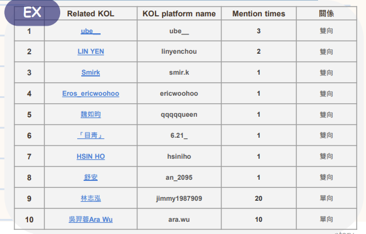
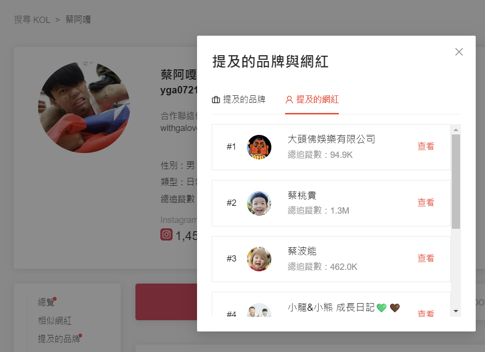
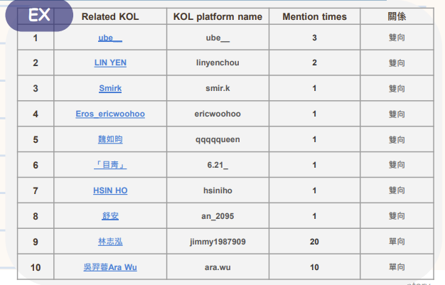
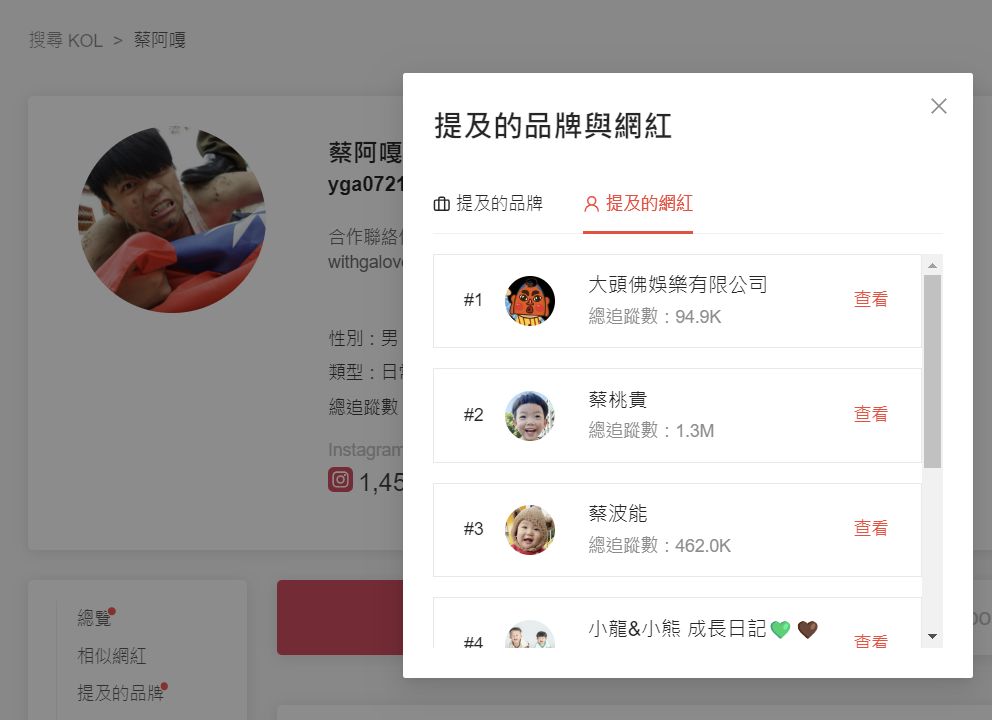
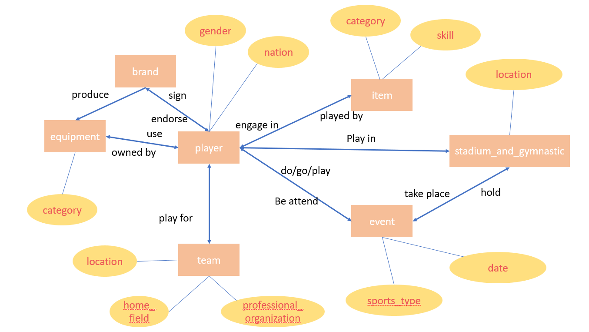
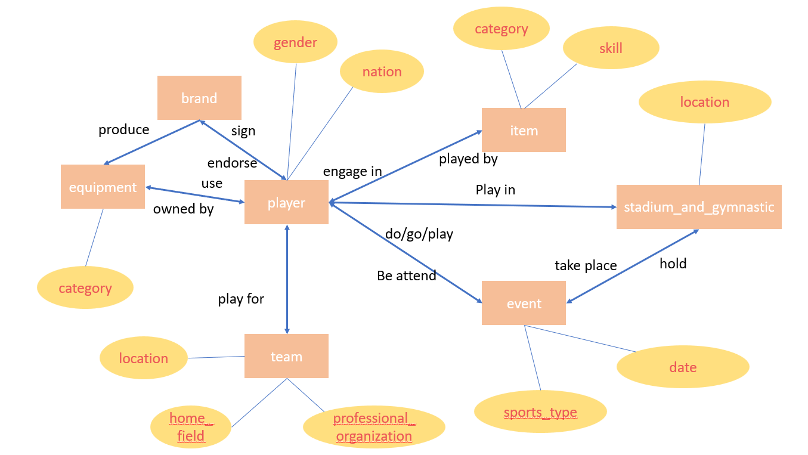

關於我
嗨！我是子朋，2023 年畢業於政治大學，取得統計碩士學位，擁有豐富的資料科學實習和競賽經驗，並在第一份工作中累積了接近 1
年的實際數據分析經驗。目前我專注於電子商務與零售業資料分析，尤其擅長方法論設計，包括指標設計、顧客分群、實驗設計和 A/B
Testing，這些技能幫助我更準確地測量與優化業務策略。在我的職場經歷中，我結合了統計學與數學理論，將模型應用於業務數據中，並以量化方式洞察消費行為，為企業決策提供支持。
此外，我擅長將理論性的分析結果轉化為易懂的故事，透過報告形式向客戶呈現，讓非技術背景的聽眾能輕鬆理解數據背後的意涵。未來，我期望在資料科學領域持續深入，透過紮實的統計、數學基礎與方法論，在更複雜的問題中展現價值，並與一支同樣致力於數據驅動決策的團隊攜手共進。
 



 
